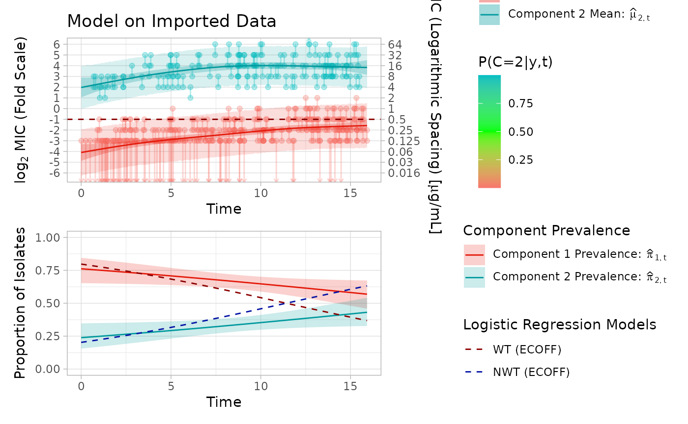

library(mic.sim)
library(survival)
library(patchwork)
library(magrittr)
library(dplyr)
#>
#> Attaching package: 'dplyr'
#> The following objects are masked from 'package:stats':
#>
#> filter, lag
#> The following objects are masked from 'package:base':
#>
#> intersect, setdiff, setequal, union
set.seed(103)
mic_data = simulate_mics(`E[X|T,C]` = function(t, c) {
case_when(c == "1" ~ -4 + (0.24 * t) - (0.0055 *
t^2), c == "2" ~ 3 + 0.08 * t, TRUE ~ NaN)
}) %>% mutate(MIC = case_when(
right_bound == Inf ~ paste0(">", 2^left_bound),
left_bound == -Inf ~ paste0("<=", 2^right_bound),
TRUE ~ paste0(2^right_bound)
)) %>% select(MIC, t)
imported_data = import_mics_with_metadata(data = mic_data, mic_column = "MIC", metadata_columns = "t")
head(imported_data)
#> # A tibble: 6 × 7
#> obs_id left_bound right_bound mic_column t low_con high_con
#> <int> <dbl> <dbl> <chr> <dbl> <dbl> <dbl>
#> 1 1 -3 -2 0.25 3.46 -3 6
#> 2 2 -Inf -3 <=0.125 1.01 -3 6
#> 3 3 3 4 16 8.35 -3 6
#> 4 4 -2 -1 0.5 8.06 -3 6
#> 5 5 -3 -2 0.25 1.93 -3 6
#> 6 6 -Inf -3 <=0.125 1.40 -3 6
model_fit = fit_EM(max_degree = 5, visible_data = imported_data, verbose = 0)
#> CV for degrees22; attempt1
#> CV for degrees33; attempt1
#> CV for degrees44; attempt1
#> CV for degrees55; attempt1
model_fit$cv_results
#> # A tibble: 4 × 4
#> degree_1 degree_2 log_likelihood total_repeats
#> <int> <int> <dbl> <dbl>
#> 1 3 3 -573. 0
#> 2 2 2 -573. 0
#> 3 5 5 -595. 0
#> 4 4 4 -609. 0
plot_likelihood(model_fit$likelihood)
plot_fm(model_fit, title = "Model on Imported Data", add_log_reg = TRUE, ecoff = 0.5)
#> Scale for y is already present.
#> Adding another scale for y, which will replace the existing scale.
#> Scale for y is already present.
#> Adding another scale for y, which will replace the existing scale.